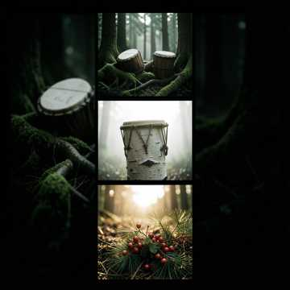
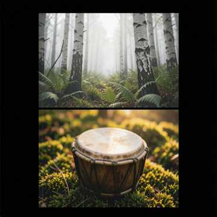
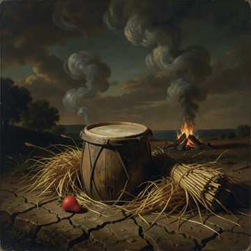

Nikw8bi nd'aln8ba8dwa
Reconstruction sourcée · audio IA à valider · 1:58Prête à écouter.
Création : Guillaum Labrecque-Houle
Voix et arrangement : génération assistée par IA (Suno)
Ce dictionnaire est, à ce stade, un projet 100 % personnel et en construction.
Son contenu, sa compilation, ses traductions, ses prononciations et ses outils pédagogiques n'ont pas été attestés, révisés ni approuvés dans leur ensemble par un professionnel.
Ne prenez rien pour acquis. Toute graphie, définition, règle, phrase, prononciation ou réponse produite automatiquement doit être vérifiée auprès de sources fiables et de personnes compétentes.
Ce site ne constitue pas une référence officielle et ne représente aucune validation officielle des Premières Nations Abénakises d'Odanak ou de Wôlinak.
Déclaration de financement de l'auteur. Ce dictionnaire a été monté et financé entièrement avec l'argent personnel de Guillaum Labrecque-Houle. Une partie de ces fonds provient de la compensation qu'il a reçue du gouvernement du Canada en lien avec l'utilisation historique, sans consentement, des terres et des ressources naturelles de sa Nation. Il ne s'agit ni d'une subvention, ni d'une commandite, ni d'une approbation institutionnelle du dictionnaire.
Dictionnaire vivant · Abenakis d'Odanak et Wôlinak · En construction
Complète les mots, retrouve les traductions, maîtrise la grammaire abenakise.
Choisis un niveau ci-dessus pour commencer.
Paroles et conception de Guillaum Labrecque-Houle. Les voix et les arrangements sont reproduits avec une intelligence artificielle afin de servir de maquettes au dictionnaire, en attendant de possibles enregistrements en studio.

Création : Guillaum Labrecque-Houle
Voix et arrangement : génération assistée par IA (Suno)

Création : Guillaum Labrecque-Houle
Voix et arrangement : génération assistée par IA (Suno)

Création : Guillaum Labrecque-Houle
Voix et arrangement : génération assistée par IA (Suno)
Création : Guillaum Labrecque-Houle
Voix et arrangement : génération assistée par IA (Suno)
Le texte affiché emploie la graphie du dictionnaire ou conserve explicitement la graphie de sa source. Suno reçoit un guide phonétique séparé qui n'est pas montré comme orthographe. Une juxtaposition poétique de mots attestés n'est pas une traduction littérale, et ces maquettes demeurent sujettes à la révision de personnes qualifiées.
Nikw8bi. Mina ida!
Nda nd'aln8ba8dwawi. Nikw8bi nd'aln8ba8dwa. N'klozi. N'mikwaldam.
Aln8ba8dwaw8gan. Nikw8bi nd'aln8ba8dwa. Wli agakimzow8gan! Mina ida!
N'namih8 sips. N'namito awikhigan. N'mow8 aples. N'miji wasawas.
Nd'aliwizi Guillaum. N'wigi W8linak. Nd'ai wigwomek. N'wal8wzin.
Wôbanaki mikwalda. N'mikwaldam. Wli nanawalmezi. Adio.
Kwaï mziwi! Wligen, païa.
Pakholigan. Lintow8gan. Pemegaw8gan. N'pemeg8.
Wig8damoda! Niona W8banakiak. Odanak. W8linak. Ndakina. Kdakinna.
Sigwan. Niben. Tagw8gw. Pbon. Kizos. Kizosoo. Wligen.
W8linaktegw. Sibo. Nebes. Kakasakw. Alakwsak. Kzelomsen.
Kwaï mziwi! Wig8damoda! Wli nanawalmezi. Adio.
Kizos. Aki. Sibo. Mskikois. Mikwalda!
Sigwan. Kikas. Solgonbi. Mskiko. Wligen. Mikwalda!
Niben. Kizos. Wloda. Mskikwimenak. Mskikois. Mikwalda!
Tagw8gw. Kzelomsen. Skweda. Pekeda. Spemki. Alakwsak. Mikwalda!
Pbon. Mzatanos. Kakasakw. Pebon alakws. Mikwalda!
W8linak. Ndakina. Wôbanaki mikwalda. N'mikwaldam. Wli nanawalmezi.
[Intro] Je marche dans le noir depuis trop longtemps Cherchant une lumière, un signe, un vent J'ai crié ton nom dans le creux de mes nuits Dis-moi Créateur, est-ce que tu me suis [Couplet 1] J'ai porté des blessures que j'ai jamais montrées Des silences plus lourds que mes années J'ai prié sans savoir vraiment comment faire Les mots s'effondraient avant d'sortir de ma terre J'ai marché sur des routes que personne connaît Cherchant mes racines dans c'qui restait De mes ancêtres, de leurs voix, de leur chant J'ai tendu les mains vers le ciel, suppliant [Pré-refrain] Dis-moi si t'es là Dis-moi si tu vois Mon cœur qui se déchire Chaque fois que je respire [Refrain] Est-ce que tu m'entends, mon Dieu, est-ce que tu m'entends Dans le vent qui souffle, dans le sang qui descend De mes ancêtres jusqu'à mes enfants Est-ce que tu m'entends, est-ce que tu me comprends J'ai besoin d'un signe, j'ai besoin de savoir Que j'suis pas juste une ombre dans le noir [Couplet 2] Y'a des matins où j'ai vu une lueur Dans le tambour qui bat comme un cœur Y'a des soirs où j'ai senti ta présence Dans le silence, dans l'évidence De la fumée qui monte, de la terre qui respire J'ai compris que tu parles sans avoir à le dire Dans chaque rivière, dans chaque feuille qui tombe Dans les voix anciennes qui sortent de la tombe [Refrain] Est-ce que tu m'entends, mon Dieu, est-ce que tu m'entends Dans le vent qui souffle, dans le sang qui descend De mes ancêtres jusqu'à mes enfants Est-ce que tu m'entends, est-ce que tu me comprends J'ai besoin d'un signe, j'ai besoin de savoir Que j'suis pas juste une ombre dans le noir [Pont] Je lâche prise, je dépose mes armes Je dépose mon doute, mes larmes Peut-être que t'as toujours été là Dans chaque épreuve, dans chaque combat Peut-être que le silence était ta façon De me montrer le vrai chemin, la vraie raison J'arrête de chercher des réponses dans le ciel Je les trouve en moi, dans c'qui est réel [Refrain final] Oui je t'entends, mon Dieu, oui je t'entends Dans le vent qui souffle, dans le sang qui descend De mes ancêtres jusqu'à mes enfants Oui je t'entends, oui je te comprends Merci pour le signe, merci de m'avoir montré Que j'ai jamais été seul, jamais abandonné [Outro] Je marche dans la lumière maintenant Portant les voix de mon sang, de mon temps Merci... merci de m'avoir entendu
Entrez le mot de passe administrateur
Ce dictionnaire est, à ce stade, un projet personnel en construction. Son contenu n'est pas garanti ni approuvé dans son ensemble par des professionnels ou par les Premières Nations Abénakises d'Odanak et de Wôlinak. Chaque élément doit être vérifié avant d'être réutilisé.
Le 8 représente une voyelle A nasale, approximativement entre le « an » et le « on » français. Ce n'est pas une succession de deux sons. Le o demeure un son distinct. Ex: Aln8ba, j8n (le nez).
| Chaque lettre | = se prononce; une consonne finale ne doit pas disparaître |
| i | = un seul I intérieur reste I; le dernier I tend vers É s'il termine le mot ou si le mot contient plusieurs I. Kizi garde I. |
| o | = O comme dans « zéro »; -on final tend vers « oun » et o devant z vers « au » |
| w | = o doux devant une consonne (Wli = oli) · glissement w devant une voyelle (W8linak = wanlinak) · très doux à la fin, sans former une syllabe « ou ». Après G ou K, il arrondit légèrement la consonne : Alsig8ntegw se termine comme « tègue », pas « té-gou ». |
| 8 | = A nasal entre « an » et « on »; le guide français reste approximatif |
| Ch | = son ts |
| J | = son dz |
| -ak | = terminaison d'un pluriel animé documenté |
| -al | = terminaison d'un pluriel inanimé documenté |
| j8n | = le nez |
Deux communautés abenakises du Québec. Odanak (Saint-François-du-Lac) et Wôlinak (près de Bécancour — W8linaktegw). Gardiennes de la langue Aln8ba8dwaw8gan.
Ce dictionnaire a été monté et financé entièrement avec l'argent personnel de Guillaum Labrecque-Houle. Une partie de ces fonds provient de la compensation qu'il a reçue du gouvernement du Canada en lien avec l'utilisation historique, sans consentement, des terres et des ressources naturelles de sa Nation. Ce financement personnel n'est ni une subvention, ni une commandite, ni une approbation institutionnelle du projet.
Cliquez le bouton + pour proposer un mot. Une proposition reste en attente tant qu'elle n'a pas été vérifiée; son envoi ne constitue pas une approbation linguistique.
Les notes historiques ou culturelles du projet ne sont pas des conseils de santé. N'appliquez aucun remède décrit sans l'avis d'une personne professionnelle qualifiée.
Les corrections et les notes de travail conservent la trace de l'évolution du projet. Cette transparence ne remplace pas une validation linguistique ou communautaire.